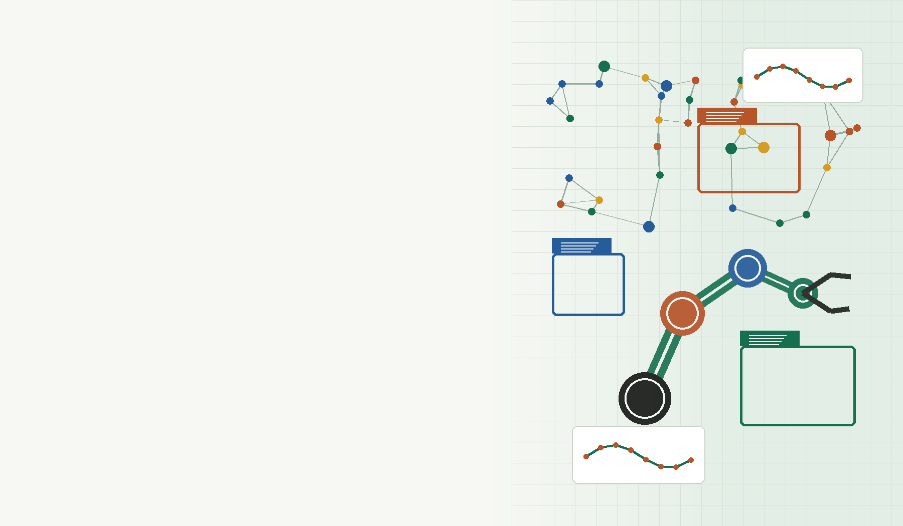

多模型基准
部署 Something-Something、CODE Bench 与 HICO-DET，比较 BLIP2、GLIP、LLaVA-Next、ContextDET 等模型。
XUECONG ZHOU
喜欢研究交易的 vibe coding 重度用户
下载中文简历 PDF关于我
我关注一个完整的问题链条：模型如何理解真实世界，研究原型如何经受开放场景的噪声，以及它最终如何成为可靠、可维护、能交付的软件系统。
2025Georgia Tech ECE 硕士
AI + 系统研究与工程并行
全栈模型、后端、云端与产品
研究方向
Georgia Tech
ML@GT
·
Essa Lab
研究助理，2025 年 1 月至今
指导人：Irfan Essa · Nikolai Warner
围绕图像描述幻觉与目标误分类，部署并比较多种视觉语言模型，构建数据增强、伪 GT、鲁棒微调和开放场景评估流程。
查看完整研究经历部署 Something-Something、CODE Bench 与 HICO-DET，比较 BLIP2、GLIP、LLaVA-Next、ContextDET 等模型。
生成伪 GT，并围绕图像描述幻觉和目标误分类建立可复现的分析流程。
基于增强版 HICO-DET 数据集使用 LoRA 微调 LLaVA，验证数据策略与模型表现。
改进 ContextDET 的 In-The-Wild 泛化能力，并通过混杂与降质数据开展鲁棒训练。
精选项目
从研究实验到真实产品，项目覆盖感知、机器人、移动应用与分布式系统。
研究项目 · 2025 至今
减少图像描述幻觉，提升目标识别和开放场景泛化的可靠性。

课程项目 · 2025 年 4 月
在 PyBullet 中构建六自由度机械臂视觉伺服环境，以动态奖励塑形加速策略学习。
奖励曲线 ↑ 37%
产品项目 · 2024 年 9 月至 12 月
从 Figma 到 Flutter / Firebase，实现校园社交应用首页、事件排序和跨平台体验。
实践经历
在企业环境中连接部署、维护、测试、接口开发与跨团队协作。
技术能力
LoRA, LLaVA, BLIP2, GLIP, ContextDET, Hugging Face, LSTM, PPO, PyBullet
Java, Spring Boot, MyBatis, JPA, JWT, Redis, Kafka, WebSocket, 微服务
AWS, Lambda, DynamoDB, Docker, Kubernetes, MySQL, OpenMPI
Vue, Nuxt, Flutter, Firebase, ECharts, Figma, 数据可视化
教育与成果
2023.08—2025.05 · 亚特兰大
2019.09—2023.06 · 广西